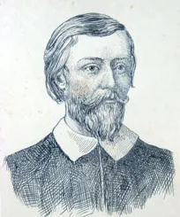
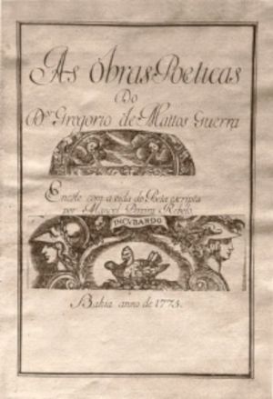

"Biografia
Filho de dois fidalgos portugueses, Gregório de Matos e Guerra nasceu em 20 de dezembro de 1636 em Salvador (BA), então capital da colônia. Estudou Humanidades no Colégio dos Jesuítas e depois partiu para Coimbra, onde se formou pela Faculdade de Direito e escreveu lá sua tese de doutoramento, toda em latim.
"Ainda em Portugal, exerceu os cargos de juiz criminal e curador de órfãos, mas, mal-adaptado com a vida na metrópole, regressou ao Brasil em 1683. Já na Bahia, o primeiro arcebispo D. Gaspar Barata concedeu-lhe os cargos de vigário-geral (uma ocupação vinculada ao Tribunal Episcopal, responsável por inquirir delitos e pela administração da Justiça) e de tesoureiro-mor. Contudo, sua recusa em completar as ordens eclesiásticas o impediu de permanecer nas funções."
"Apaixonou-se pela viúva Maria de Povos, com quem viveu primeiramente na bonança e até cair na miséria. Foi considerado, em sua época, um homem infame, mas um excelente poeta. Caiu na boemia, amargurado, debochando e satirizando de tudo e de todos, especialmente dos que tinham poder, a quem incomodou tanto a ponto de ser deportado para Angola em 1685 e ser proibido de voltar ao Brasil até 1694. Fixiu-se em Recife (PE), em 1696, onde acabou falecendo, em 26 de novembro do mesmo ano."
"Características literárias
"A obra de Gregório de Matos possui duas vertentes: a satírica, composta dos versos de escárnio pelos quais ficou conhecido e que lhe renderam a alcunha de Boca do Inferno, e a lírico-amorosa, cujos poemas dividem-se entre temas sacros e do amor sensual. O poeta reverbera em sua obra características literárias do barroco, como a moralização da vida terrena, o caráter contrarreformista, o dualismo e a angústia humana."
"Gregório de Matos escreveu sonetos, quadras, sextilhas e poemas em formas diversas, sempre rimados e geralmente seguindo o esquema métrico regular, vigente no período (e que facilitava a memorização). É nos sonetos que se encontra sobretudo a influência barroca de sua obra, com silogismos, uso abundante de figuras de linguagem, jogos de palavras e oposições (sagrado-profano, amor-pecado, sublime-grotesco etc.)."
"Obras"
"Segundo o professor e pesquisador João Adolfo Hansen, um dos principais especialistas na literatura da época colonial brasileira, não se conhece nenhum manuscrito de próprio punho feito por Gregório de Matos. Todos os seus textos, à semelhança de outros poetas que lhe eram contemporâneos, foram reunidos em compilações feitas por seus admiradores, de modo que o próprio autor nada editou em vida."
"Nos Seiscentos, a circulação de livros era escassa e muitas vezes proibida ou censurada, e poucos eram os cidadãos letrados no Brasil. Os poemas de Gregório de Matos eram, via de regra, escritos em panfletos, que circulavam pela cidade de Salvador. Esses panfletos eram reunidos por alguns colecionadores e depois costurados em um tipo de documento conhecido como códice. Já os versos satíricos eram comumente colados (com cola de farinha de mandioca) nas portas das igrejas e quem sabia ler os declamava – de fácil memorização, serviam para inspirar novos poemas."
"São mais de 700 os textos atribuídos a Gregório de Matos, mas não há como haver certeza comprovada de sua autoria. É do início do século XVIII a publicação de uma primeira compilação de seus versos, intitulada A Vida do Excelente Poeta Lírico, o Doutor Gregório de Matos e Guerra, feita pelo baiano Manuel Pereira Rabelo. Essa reunião de poemas ficou, contudo, esquecida até 1841, quando o cônego Januário da Cunha Barbosa, membro do recém-fundado Instituto Histórico e Geográfico Brasileiro, publicou dois poemas cômicos dessa compilação."
"O chamado Códice Rabelo é provavelmente a principal fonte para a publicação de Poemas escolhidos, obra publicada em 2010 com seleção, prefácio e notas do professor José Miguel Wisnik. Também merece destaque a Coleção Gregório de Matos, organizada por João Adolfo Hansen e Marcello Moreira, composta de cinco volumes reunindo a poesia atribuída ao autor a partir do Códice Asensio-Cunha."